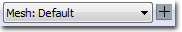

UDN
Search public documentation:
AnimTreeEditorUserGuide
日本語訳
中国翻译
한국어
Interested in the Unreal Engine?
Visit the Unreal Technology site.
Looking for jobs and company info?
Check out the Epic games site.
Questions about support via UDN?
Contact the UDN Staff
中国翻译
한국어
Interested in the Unreal Engine?
Visit the Unreal Technology site.
Looking for jobs and company info?
Check out the Epic games site.
Questions about support via UDN?
Contact the UDN Staff
UE3 Home > Unreal Editor and Tools > AnimTree Editor User Guide
UE3 Home > Animation > AnimTree Editor User Guide
UE3 Home > Animators > AnimTree Editor User Guide
UE3 Home > Cinematic Artist > AnimTree Editor User Guide
UE3 Home > Animation > AnimTree Editor User Guide
UE3 Home > Animators > AnimTree Editor User Guide
UE3 Home > Cinematic Artist > AnimTree Editor User Guide
AnimTree Editor User Guide
Overview
Opening the AnimTree Editor
AnimTree Editor Interface
- Menu Bar
- Tool Bar
- Preview Pane - Previews the animation on a skeletal mesh.
- Graph Pane - Nodes that make up the Anim Tree.
- Properties Pane - Properties of the mesh, animation set, or animation sequence.
Menu Bar
Window
- Preview - Toggle display of the Preview Pane.
- Properties - Toggles display of the Properties Pane.
Tool Bar
| Icon | Description |
|---|---|
| Pauses playback in the Preview Pane. | |
| Shows only the result of the currently selected node as the rendered output in the Preview Pane. | |
| Toggles display of node weights in the Graph Pane. | |
| Toggles display of the preview mesh's skeleton in the Preview Pane. | |
| Toggles display of the bone names of the preview mesh's skeleton in the Preview Pane. | |
| Toggles between the lit rendered view and a wireframe view in the Preview Pane. | |
| Toggles display of a preview ground mesh in the Preview Pane. Can be useful for previewing certain effects like foot placement. | |
|  | Selects the mesh to preview and allows you to add new preview meshes using the current selection as a basis. |
| Selects the AnimSet to preview and allows you to add new preview AnimSets using the current selection as a basis. | |
 | Selects the Socket to preview and allows you to add new preview Sockets using the current selection as a basis. |
Preview Pane
 The Preview Pane shows a rendered (or optionally wireframe) view of the AnimTree applied to a preview skeletal mesh. This allows you to get quick and accurate feedback to how the AnimTree will behave and look in-game right from inside of the AnimTree Editor.
Navigating the Preview Pane is similar to many of the other editor preview windows. Left-clicking and dragging the mouse will rotate orbit the camera around the preview mesh. Right-clicking and dragging will move the camera along its local X-axis, effectively zooming in or out. Middle-clicking and dragging will move the camera along its local YZ-plane.
The Preview Pane shows a rendered (or optionally wireframe) view of the AnimTree applied to a preview skeletal mesh. This allows you to get quick and accurate feedback to how the AnimTree will behave and look in-game right from inside of the AnimTree Editor.
Navigating the Preview Pane is similar to many of the other editor preview windows. Left-clicking and dragging the mouse will rotate orbit the camera around the preview mesh. Right-clicking and dragging will move the camera along its local X-axis, effectively zooming in or out. Middle-clicking and dragging will move the camera along its local YZ-plane.
Graph Pane
 The Graph Pane is a node-based workspace similar to the Material Editor or Kismet. This is where you can add new nodes into the AnimTree, connecting them together or to the base AnimTree node to create new animation behaviors.
The Graph Pane is a node-based workspace similar to the Material Editor or Kismet. This is where you can add new nodes into the AnimTree, connecting them together or to the base AnimTree node to create new animation behaviors.
AnimTree Node
The AnimTree node is the root of the AnimTree. Initially, it has two inputs: Animation and Morph. These allow you to create networks to control the skeletal animation and morph targets applied to the mesh the AnimTree is assigned to. The AnimTree node can also have additional inputs added to allow the use of skeletal controllers to control the bones in the skeletal mesh. This can be accomplished by right-clicking on the AnimTree node and choosing Add SkelControl Chain. From there, a dialog will appear allowing you to choose the bone to control. Once a bone is chosen, a new input will appear on the AnimTree node with the name of the bone. The Animation input will have a network consisting of various Animation and Animation Sequence nodes connected to it. The Morph input will have a network consisting of various Morph nodes connected to it. The various SkelControl bone inputs will have networks consisting of various Skeletal Control nodes connected to them. Each of these types of inputs and nodes are color-coded so you can quickly decipher what type you are dealing with. The Animation input and Animation nodes are orange, while the Animation Sequence nodes are a dark red. The Morph input and nodes are purple. The SkelControl inputs and Skeletal Control nodes are green. AnimTree Properties:- AnimGroups - List of animation groups used to synchronize animations.
- Group Name - Unique name of the animation group.
- Rate Scale - Playback speed multiplier for this animation group.
- Compose Pre Pass Bone Names -
- Compose Post Pass Bone Names -
- Preview Mesh List - List of skeletal meshes used with this AnimTree for previewing in the Preview Pane.
- Display Name - Readable display name to show in the Preview Mesh list in the toolbar.
- Preview Skel Mesh - Skeletal mesh asset for this preview mesh.
- Preview Morph Sets - List of MorphTargetSets to use with this preview mesh.
- Preview Socket List - List of sockets belonging to the preview mesh to preview in the Preview Pane.
- Display Name - Readable display name to show in the Preview Socket list in the toolbar.
- Socket Name - Name of the socket on the preview mesh for this preview socket.
- Preview Skel Mesh - Skeletal mesh asset to attach to this preview socket in the Preview Pane.
- Preview Static Mesh - Static mesh asset to attach to this preview socket in the Preview Pane.
- Preview Anim Set List - List of AnimSets used with the preview mesh for previewing in the Preview Pane.
- Display Name - Readable display name for this preview anim set.
- Preview Anim Sets - List of AnimSet assets to use for this preview anim set.
Context Menu
The context menu of the Graph Pane contains functionality for adding new nodes of all types as well as copying, pasting, and duplicating selected nodes.Properties Pane
The Properties Pane shows the properties for the currently selected node in the Graph Pane. It is identical to the properties windows used elsewhere in UnrealEd in terms of functionality.Controls
Mouse Controls
Preview Pane- LMB + Drag - Rotates the camera around the mesh.
- RMB + Drag - Moves the camera along its local X-axis, essentially zooming in and out..
- MMB + Drag - Moves the camera along its local YZ-plane.
Keyboard Controls
- L + Mouse Move - Rotates the preview light in the Preview Pane.
Hot Keys
- Ctrl + W - Duplicates the currently selected nodes in the Graph Pane.